-
No More Marble Racing Godot tower-defense where marbles rush your path and each stage scales differently.
Project Overview
No More Marble Racing is a marble-themed tower defense game built in Godot. Players place towers, manage money and lives, and survive increasingly intense rounds of marbles across multiple stages (including Stage 1, Desert, and Stage 3), each with different spawn pacing and reward scaling.
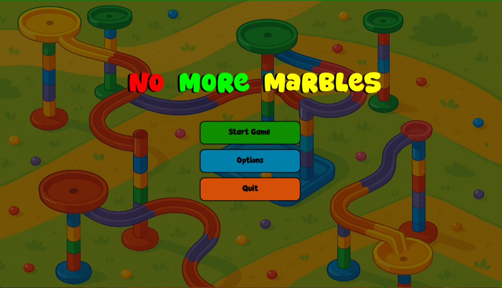
Defend the path by placing towers strategically while marbles get faster and more varied each round. Key Features
Wave and round progression with escalating difficulty.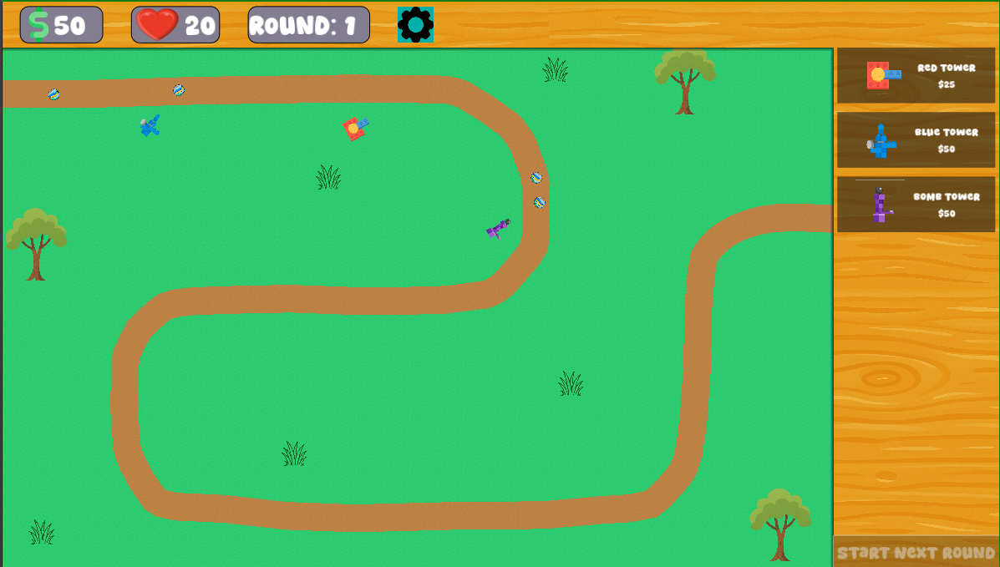
Path spawners handle stage-specific spawning logic, and enemy mixes. Core game-state for economy, lives, and game over.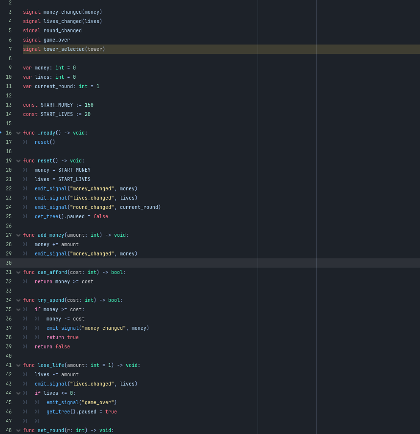
Centralized state tracks money, lives, and current round, with signals to keep UI and gameplay synced. Multiple Stages with different stlyes and paths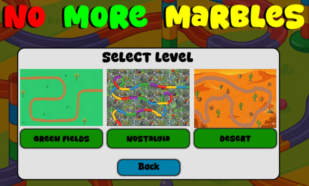
Red, Blue, and Purple tower panels provide quick cost and role clarity for placement decisions. Audio feedback pipeline for UI and gameplay polish.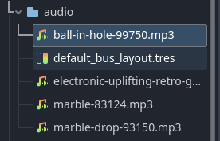
Dedicated audio buses (Master, Music, SFX) plus hover/click UI sound effects improve game feel. Built With
Engine & Language: Godot + GDScript
Systems: Signal-based game state, stage-specific path spawners, modular UI tower panels
Assets: Custom tower textures, font styling, dedicated audio music and sound effects -
FakeAsana ASP.NET Core + .NET client stack for managing projects and to-dos with file-based persistence.
Project Overview
FakeAsana is a full-stack .NET project management app inspired by task-tracking workflows. It includes an ASP.NET Core Web API for Projects and ToDos, shared model contracts in a library, and client-facing service proxies that consume API endpoints. Instead of a traditional database, data is persisted to JSON files on disk, making the architecture easy to inspect and learn from.
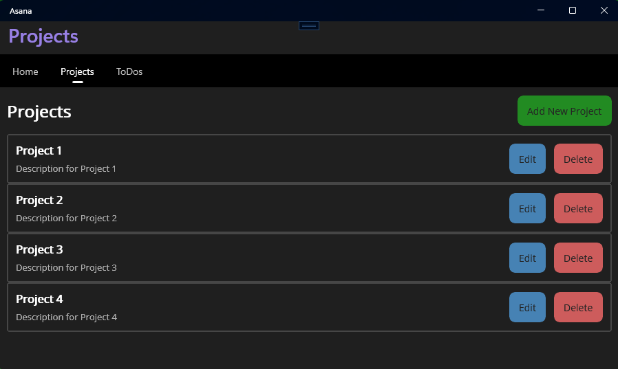
Create, update, and organize projects and tasks through a layered API and client service architecture. Key Features
RESTful controllers for project and to-do CRUD operations.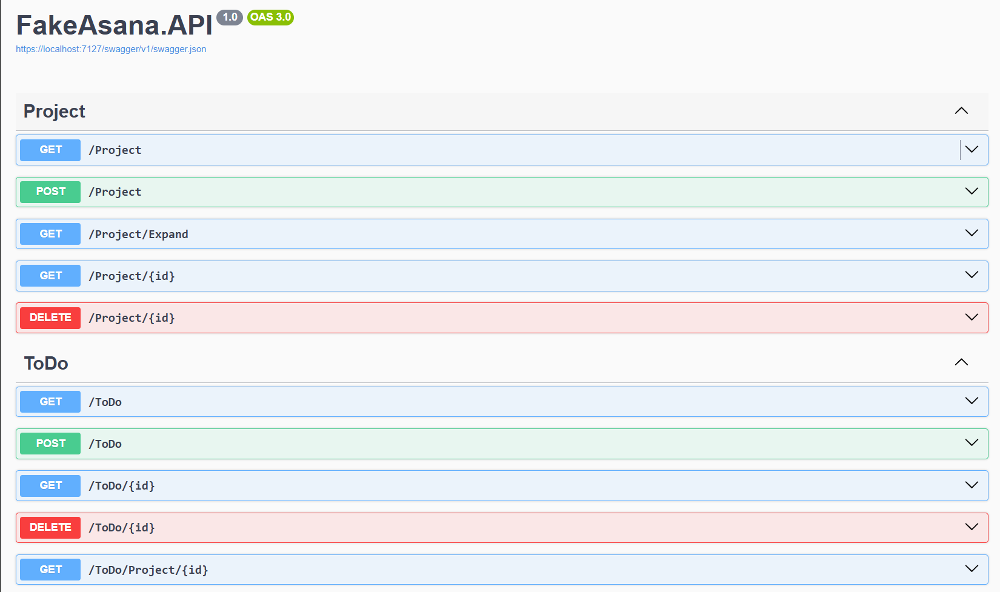
Dedicated controllers expose routes for listing, expanding, retrieving by id, deleting, and saving records. Enterprise layer abstraction between API controllers and persistence.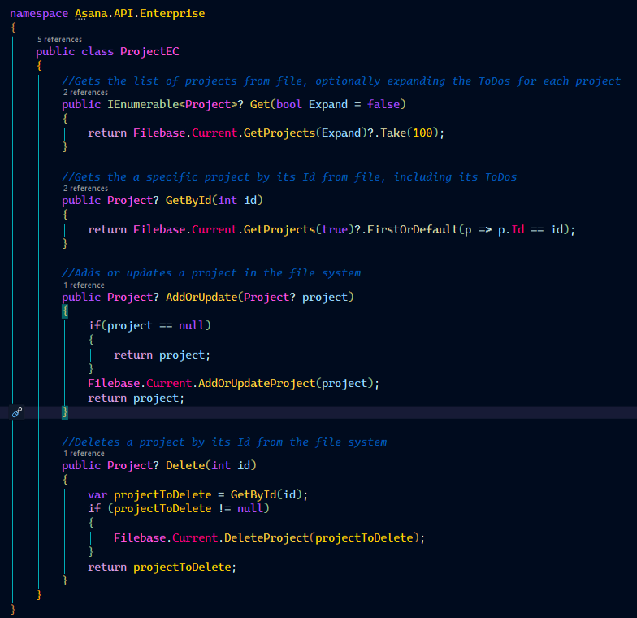
ProjectEC and ToDoEC centralize business operations and isolate filebase access from controllers. File-based JSON storage with per-project folders and automatic completion tracking.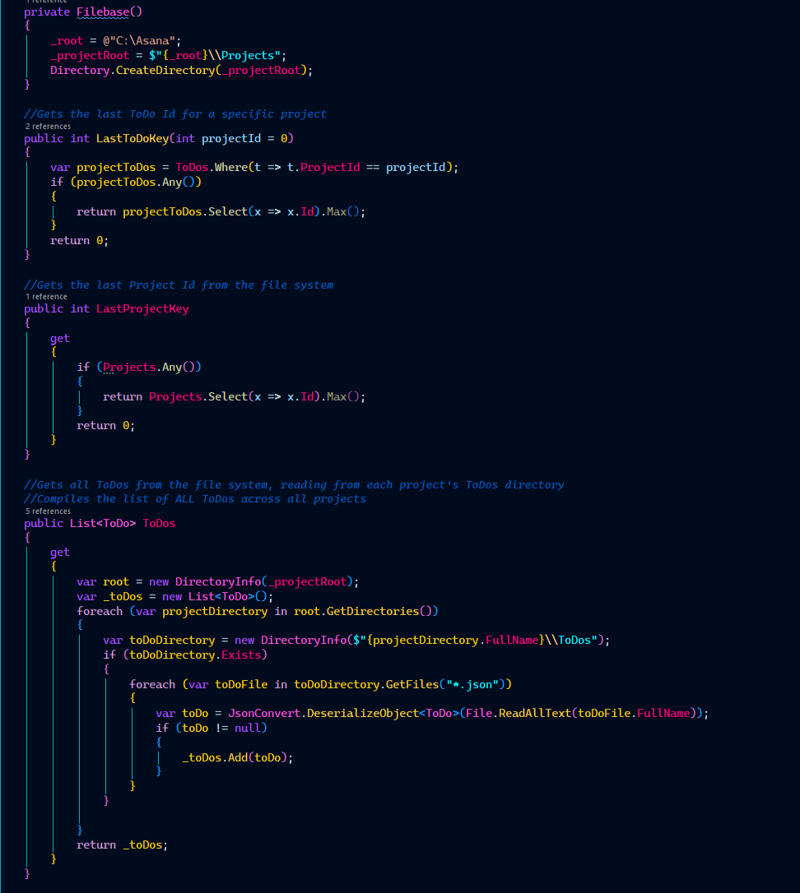
Projects and ToDos are stored in structured directories, with completion percent recalculated after task changes. Reusable service proxies for client integration.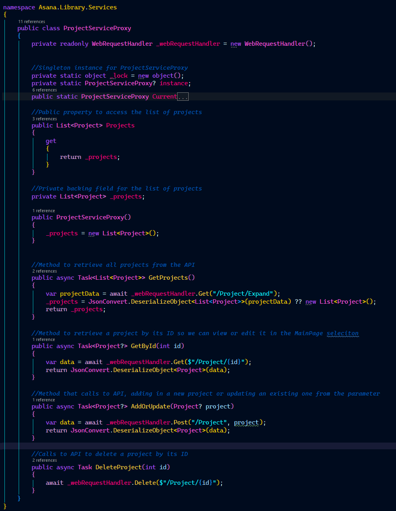
Shared proxy classes handle HTTP calls and JSON serialization for project and to-do workflows. Built With
Backend: ASP.NET Core (.NET 8), Swagger (Swashbuckle)
Shared Layer: C# class library models/services
Persistence: File system JSON storage (Newtonsoft.Json)
Client Support: Service proxy pattern with async HTTP requests -
Python Bank Flask banking simulation with role-based dashboards, live chat, and PostgreSQL-backed transactions.
Project Overview
Python Bank is a multi-role web application that simulates core banking workflows. Users can view checking/savings balances and transfer funds, employees/admins can manage accounts, and admins can run system-wide operations like interest calculation and pending transaction processing. The app combines Flask routes, PostgreSQL persistence, and Socket.IO-powered chat support.
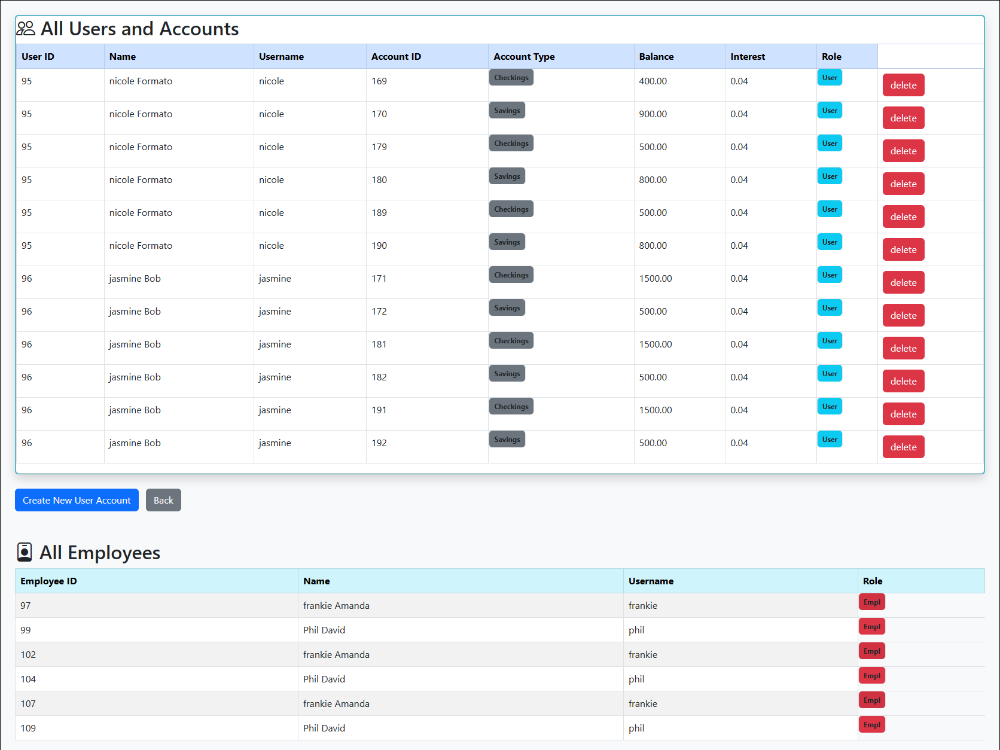
Role-based dashboards provide different capabilities for users, employees, and administrators. Key Features
Role-based authentication and access control across all core routes.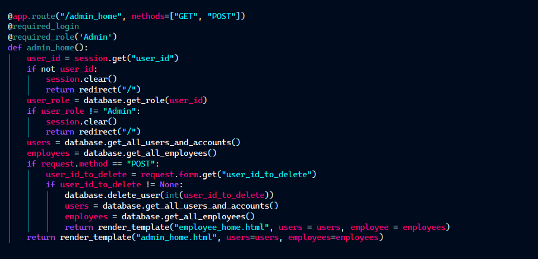
Decorator-based guards enforce permissions for user, employee, and admin-only actions. Bank account operations with transaction history and transfer workflows.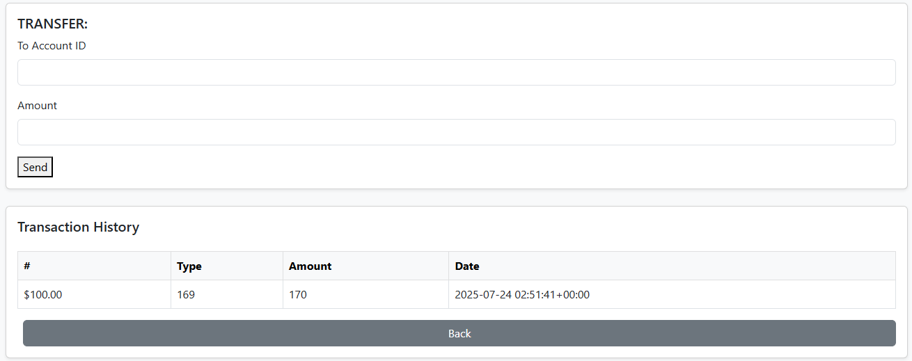
Users can transfer money between accounts and review account-specific transaction records. Parallelized backend jobs for pending transaction batches and interest updates.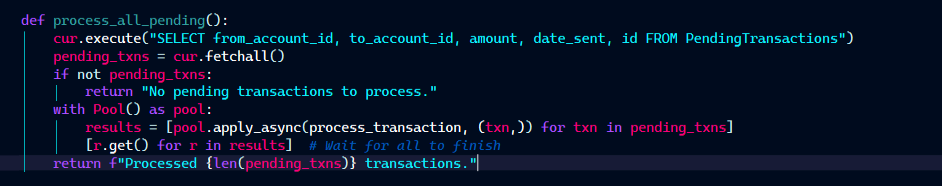
Multiprocessing and thread pools improve throughput for high-volume financial updates. Built With
Backend: Python, Flask, Flask-Limiter, Flask-SocketIO Database: PostgreSQL + psycopg2 Security: bcrypt password hashing, session-based auth, role checks Frontend: Jinja2 templates, Bootstrap 5, Bootstrap Icons